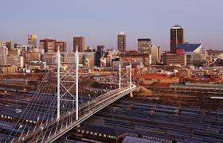
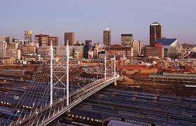

.jpg) 

WHY VISIT JOHANNESBURG?
Johannesburg, also known as Jozi or Joburg, is South Africa's largest city and a vibrant economic and cultural hub.
Johannesburg was founded in 1886 after the discovery of gold on the Witwatersrand, leading to a massive gold rush. It quickly became the economic center of South Africa. The city played a key role in the country's political history, particularly during apartheid when it was home to resistance movements and figures like Nelson Mandela. Post-apartheid, Johannesburg has transformed into a global city known for its skyscrapers, economy, and cultural diversity.
Over time, Johannesburg grew from a small mining settlement into South Africa's largest city after the discovery of gold on the Witwatersrand in 1886. In the late 19th century, the rapid influx of prospectors and entrepreneurs transformed Johannesburg into a bustling economic hub, laying the foundations for its development as the country's financial center.
By the early 20th century, Johannesburg's growth was driven by industrialization, and it became the heart of South Africa's gold mining industry. The city also played a significant role in the country's political history, particularly during the apartheid era, with Soweto emerging as a focal point of resistance movements. Landmarks like Constitution Hill and the Apartheid Museum reflect this legacy.
In the late 20th and early 21st centuries, Johannesburg evolved into a modern metropolis, with Sandton rising as a key business district and areas like Maboneng and Braamfontein becoming cultural and creative hotspots. Today, Johannesburg is a dynamic, cosmopolitan city, known for its rich history, diverse communities, and thriving arts and business scene.
Places to visit
My favorite spots in Johannesburg
Gold Reef City
Gold Reef City is an amusement park in Johannesburg, South Africa. Located on an old gold mine which closed in 1971, the park is themed around the gold rush that started in 1886 on the Witwatersrand, and the buildings in the park are designed to mimic this period.
Address:
Northern Pkwy & Data Cres, Johannesburg, 2159
What Golf Reef City Offeres:
Take your pick from 16 thrilling rides, 7 Family rides, 21 dedicated kids rides, Jump City Trampoline Park, the only authentic underground mine tour in Johannesburg, 12 dining options, multiple Retail stores, plus 15 other attractions all set against a gold rush era backdrop.

Hector Pieterson Museum
The Hector Pieterson Museum is a museum located in Orlando West, Soweto, South Africa. Located two blocks away from where student protester Hector Pieterson was shot and killed on 16 June 1976, the museum is named in his honour and covers the events of the anti-Apartheid Soweto Uprising, where more than 170 protesting school children were killed. The museum features films, newspapers, personal accounts and photographs, the most famous being the iconic photo by Sam Nzima.
Address:
8287 Khumalo Rd, Orlando West, Johannesburg, 1804
The Importance of the Museum
To commemorate the role of students in the fight against the Apartheid in South Africa. The Hector Pieterson Memorial and Museum is dedicated to preserve the memory of the 1976 Soweto uprisings.
Sandton City
Sandton is a financial, commercial and residential area, located in the northern part of the City of Johannesburg Metropolitan Municipality. Formerly an independent municipality, Sandton's name came from the combination of two of its suburbs, Sandown and Bryanston.
Address:
Sandton. 2196, City of Johannesburg
What Sandton Offeres:
Sandton offers a vibrant mix of luxury shopping, dining, entertainment, and business opportunities, including the iconic Sandton City, Nelson Mandela Square, and the Sandton Convention Centre, making it a prominent financial and business hub.